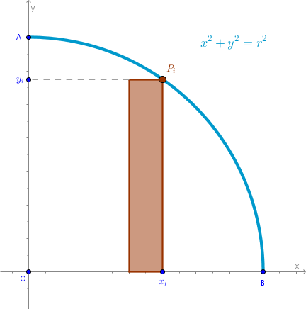

Problem
Knowing that the square area of a circle with a radius \(r\) is \(\pi r^2\) find the value of the following limit:
$$\lim_{n\to +\infty} \frac {1}{n^2} \sum_{i=1}^n \sqrt {n^2 - i^2}$$
Solution
We know that the limits for both sums, left and right, exist and are equal. Let us construct Right Riemann Sum for a quarter of the given circle located in the first quadrant where \(x \in [0, r]\):
Let:
$$OB = OA = r$$The square area of the \(i-\)th primitive rectangle is:
$$A'_{i, r} = \frac {r}{n} \times y_i =$$ $$\frac {r}{n} \times \sqrt {r^2 - x_i^2} =$$ $$\frac {r}{n} \times \sqrt {r^2 - \frac {r^2}{n^2}i^2} =$$ $$\frac {r^2}{n^2} \times \sqrt {n^2 - i^2}$$where we have used the fact that:
$$y(x) = \sqrt {r^2 - x^2}$$Right Riemann Sum then is:
$$A'_r = \sum_{i=1}^n A'_{i, r} =$$ $$\frac {r^2}{n^2} \sum_{i=1}^n \sqrt {n^2 - i^2}$$Four above sums make up the approximation of the square area of the entire circle:
$$A_r = \lim_{n \to +\infty} 4 \times A'_r =$$ $$\begin{equation} 4r^2 \lim_{n \to +\infty} \frac {1}{n^2} \sum_{i=1}^n \sqrt {n^2 - i^2} \end{equation}$$Equate (1) to \(\pi r^2\):
$$\begin{equation} 4r^2 \lim_{n\to +\infty} \frac {1}{n^2} \sum_{i=1}^n \sqrt {n^2 - i^2} = \pi r^2 \end{equation}$$Divide both sides of (2) by \(4r^2\):
$$\bbox[#e8e8e8,3pt]{\lim_{n\to +\infty} \frac {1}{n^2} \sum_{i=1}^n \sqrt {n^2 - i^2} = \frac {\pi}{4}}$$We will use that limit elsewhere, including Ellipse chapter.
\(\blacksquare\)